📌 本資料について(弁護士向け・伏字版)
本パッケージは 第三者(B 当事者)の特定可能情報を全て伏字化 したインターネット公開版です。
実名・ナンバー・勤務先・保険会社名・電話番号などの実情報は LINE 個別 or 電話でお伝えします。
URL を知る者のみアクセス可、検索エンジン非公開、72 時間後に自動削除予定。
🚗 交通事故案件 弁護士相談パッケージ
事故日時: 2026 年 6 月 11 日(木)09:28:18.5 JST
事故現場: 東京都板橋区坂下 3 丁目 T 字路(優先道路 vs 脇道一時停止、35.7879N, 139.6846E)
作成: 2026 年 6 月 17 日
主訴(戦略 γ):
① 過失割合 A 5% : B 95% を目標(訴訟ベース 0:100 射程)
② 人身切替 → 後遺障害 14 級認定狙い
③ A 側 弁護士費用特約 300 万限度内で完結
④ 書面処理型・月 1 進捗報告の受任契約希望
1. 事案サマリ(ドラレコ SSOT 反映)
| 日時 | 2026-06-11(木)09:28:18.5(音声 PCM 飽和で確定) |
|---|
| 場所 | 東京都内 T 字路(板橋区坂下 3 丁目) |
|---|
| A(依頼者)車 | 国産 SUV(プレート伏字、A 本人運転、北→南進行) |
|---|
| B(相手)車 | 輸入 SUV(プレート伏字) |
|---|
| B 属性 | ★ 損害保険特級認定代理店(保険業界トップ専門資格)、輸入車ディーラー勤務 |
|---|
| B 保険 | 大手損保(伏字) |
|---|
| A 保険 | 大手損保(伏字)+ 弁護士費用特約 300 万円付帯 |
|---|
事故動態(ドラレコ + 体験ベース)
- A: 南北優先道路を北→南進行、本来車線=東側(左側通行の左車線)、~10-15 km/h
- 道路状況: ① 信号付き交差点(北) → ② T 字路(信号なし、脇道は西側、一時停止あり)
- ② の南側に工事車両(業者伏字、特定済)が東側車線寄りに停車。誘導員 1 名介在、青シート建設足場で A 左視界制限
- A: 誘導員「進め」合図確認後、東側車線で南進(ドラレコ全フレームで東側車線一貫)
- B: 脇道で一時停止後、**ずっと静止**(誘導員の「止まれ」合図を「自分への進め」と誤認、ディーラー納車を急いでいた、と本人自白)
- A が ② 交差点を通過中に B が突発的に右折開始
- 09:28:18.5 衝突(B フロント左コーナーが A 右側面 中央〜後部に並行擦り、B はほぼ南向き)
- ★ B は衝突瞬間まで A の FRONT/REAR 両ドラレコに**一切映っていない**(A 右側面真横の死角に潜入)
- 衝突直後 REAR ドラレコに B(輸入 SUV)が初めて映り、A の真後ろやや右に並んで停止
- A が警察 110 + 自保険に即時報告。警察官関与確定後、B が「免許証だけ見せて約 15 分立ち去り」
2. 現場地図(Google 衛星)
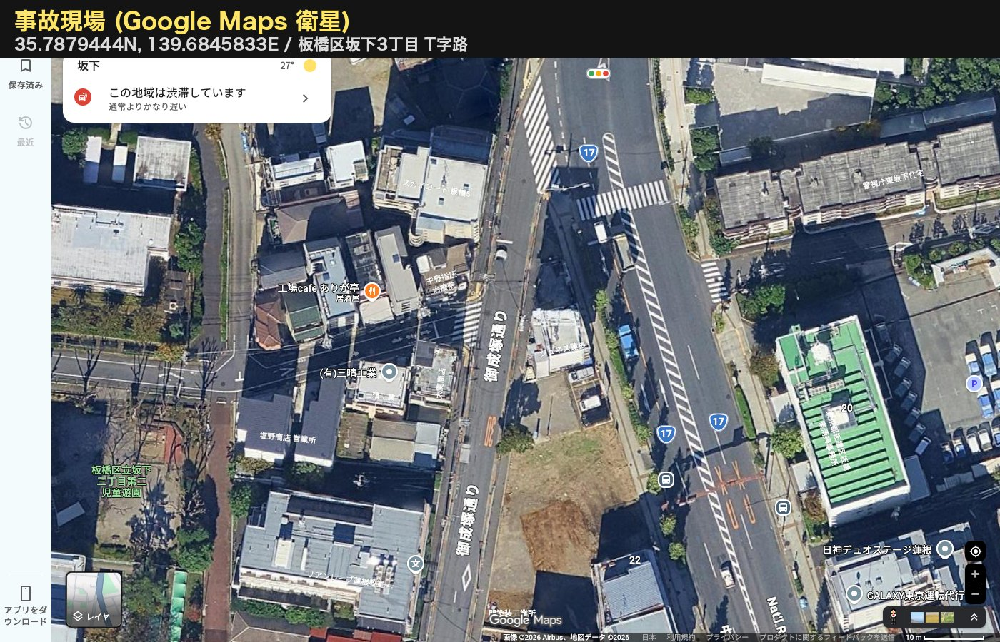
座標 35.7879444N, 139.6845833E / Google Maps 衛星(Maps SSOT)
3. 現場平面図(自作・伏字版)
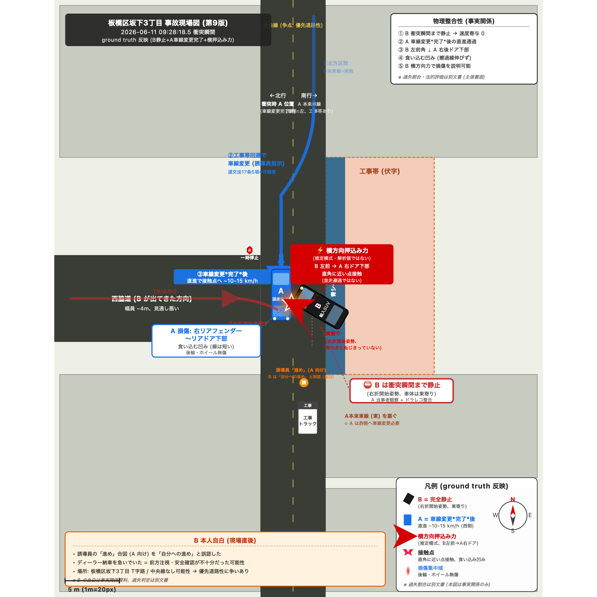
A 軌跡(青)/ B 軌跡(赤)/ 誘導員(黄)/ 衝突位置(★)/ 信号待ち 2 台 / 工事車両
4. ドラレコ動画(LINE 個別共有)
⚠️ ドラレコ動画は **Google Drive で LINE 個別共有** いたします(動画内にナンバー・社名・電話番号が映るため、公開 URL では未収録)。
61 秒、2560×720 合成、F+R 同期、衝突瞬間 22.5 秒で赤フラッシュ + 音声 PCM 飽和注釈。
5. 重要瞬間 5 枚(ドラレコ静止画・伏字版)
① 09:28:16.0 衝突 2.5 秒前 — 誘導員視認、A は ① と ② の間 東側車線
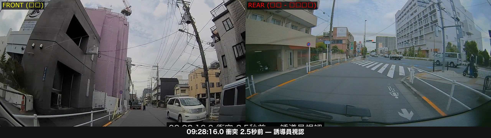
② 09:28:18.4 衝突直前 0.1 秒 — A は ② 交差点直前(B は両カメラ死角)
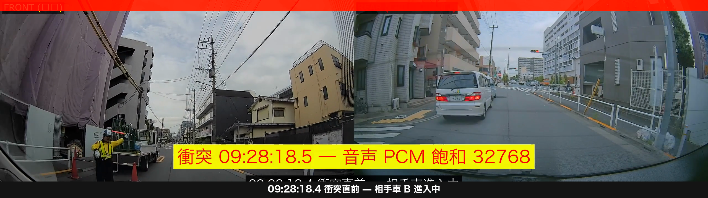
🚨 ③ 09:28:18.5 衝突瞬間 — 音声 PCM 飽和 32768
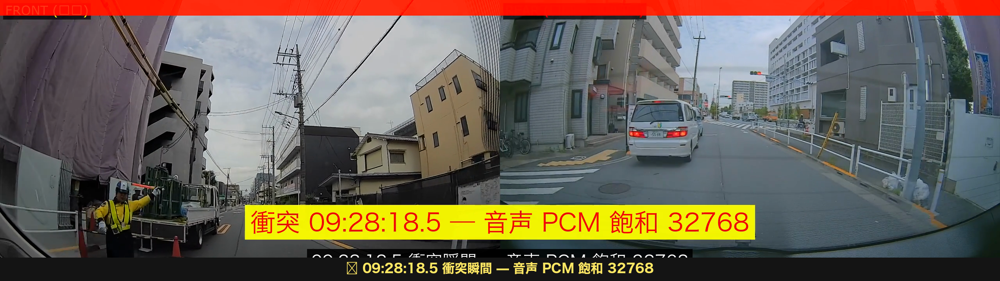
④ 09:28:19.5 衝突直後 — A 急停止、REAR に B が初出現
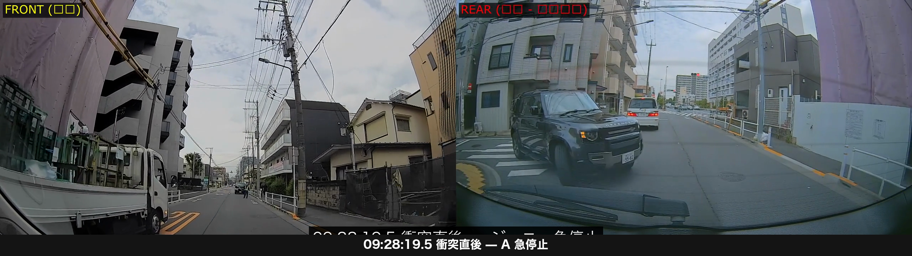
⑤ 後方視点 — B 車・工事業者 特定(伏字)
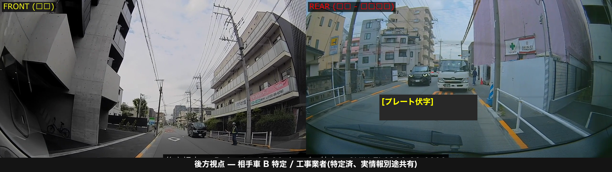
📊 PCM 16bit 飽和 32768 = 録音範囲(±32768)を超える物理衝撃の確定証拠
通常音は ±10,000 程度の振幅、衝突音のみ ±32768 の天井に「張り付き」。
→ 相手保険会社の「軽微事故 / 衝突力学疑い」反論を物理的に粉砕。
→ ドラレコ視覚は B 死角で映らないが、**音声飽和が唯一の物理 ground truth**。
全体波形(30 秒間):
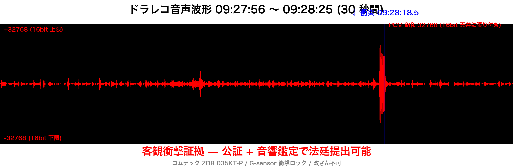
衝突瞬間 1.5 秒拡大(振幅 ±32768 に張り付き):
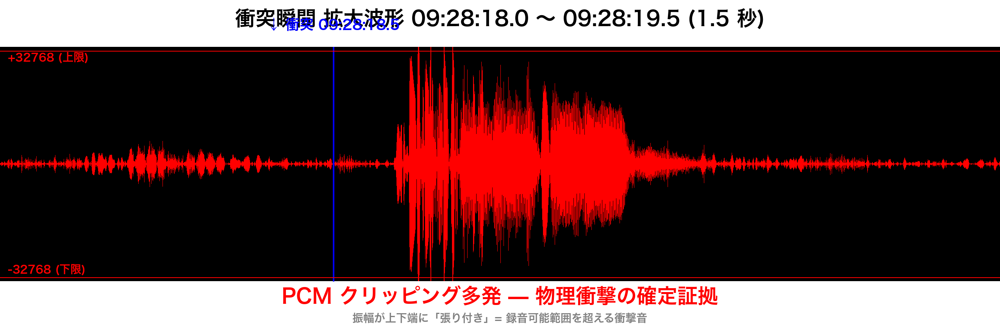
7. 両車損傷写真
A 車(依頼者・国産 SUV)右後方側面の損傷
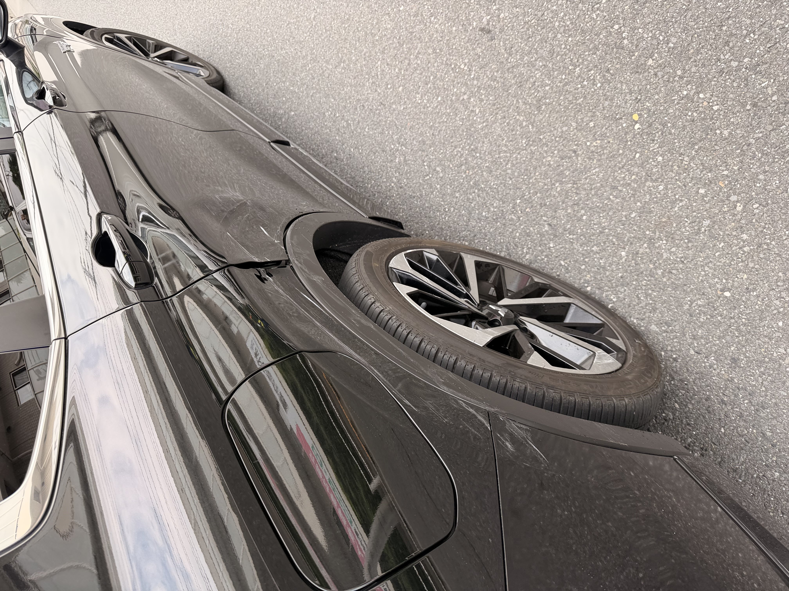
右リアフェンダー〜リアドア下部に直線的擦り傷(後輪・ホイールは無傷)
A 車 追加被害写真(2026-06-17 撮影)
⚠️ 衝突メカニズム訂正(ドラレコ + 損傷写真 + 体験ベース)
・B 車は衝突瞬間に停止していた(右折開始位置、まだ曲がっていない)
・A は車線変更を完了した状態で B を視認後の停止位置に近づいた
・接触: B の左前 × A の右後方側面(B の左フロントコーナーが A 右後ろ側面に接触)
・平面図 / 3D の B 車向き・位置は更新中(本面談後に修正版を提供します)
B 車(輸入 SUV)フロント右の損傷(ナンバー伏字)
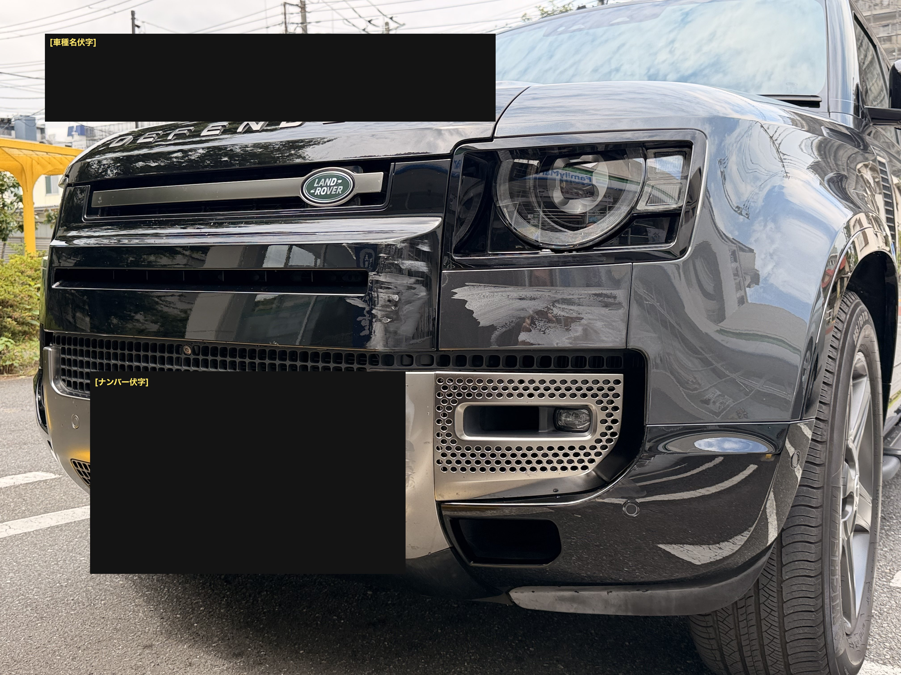
フロントバンパー右側 + ナンバープレート右下部に擦り傷 = フロント左コーナーが A 右側面に接触
物理整合分析:
A 右側面の直線的擦り傷 + B フロント左コーナーの擦り傷 = 両車が**並行に近い角度で擦り合った**ことを示す。
→ 「正面衝突的な突っ込み」ではなく、B が A の右側面に**左方向に切れ込んで接触**した形。
→ B 衝突姿勢 = ほぼ南向き(0.2-0.3 rad)= A の進行方向に近い角度。
8. 医療(武藤クリニック 6/17 初診)
🏥 初診サマリ(2026-06-17 受診済)
- レントゲン診断済(頸椎)
- 主訴: 右肩・右首痛、首が右に回らない
- 処方箋: 受領済(薬は別途)
- 電気治療: 今日は時間なく後日
- 会計: 自費 10,000 円超(保険診療切替は 6 月中まで可)
- 診断書: 作成可(費用未確認)
医師所見(録音より要約)
| 項目 | 所見 |
|---|
| 頸椎の骨 | 健全(隙間 OK) |
| 体質 | 元々肩こりが起こりやすい姿勢・骨格 |
| 首の曲がり(姿勢) | 元々のもの = 医師見解「事故とは関係ない」 |
| 右首が右に回らない | 筋肉痛(電気治療で対応可) |
| 右肩痛 | 同上(電気治療継続予定) |
| 下向きの痺れ | 元々の頸椎の形状由来、事故と無関係 |
| 神経学的所見 | 重大所見なし |
⚠️ 弁護士確認最優先事項
- 🚨 保険診療切替期限: 6/30(残り 13 日) → 切替判断を早急に
- 🚨 医師の「事故と関係ない」発言の取扱い → 後遺障害 14 級認定への影響、診断書記載方針
- 診断書に「頸椎捻挫 / 外傷性頸部症候群」「事故との因果関係あり」と書いてもらえるか
- 電気治療の頻度・期間方針(14 級認定基準は 通院 70 日 + 症状固定 3 ヶ月以上が目安)
- 代車特約なしで修理期間中の代車費用を相手保険から請求可能か
9. 戦略 γ + 過失主張
視認対称性論点(ドラレコ SSOT 基準)
📍 双方の視界対称性 + B 死角接触
A は北行き信号待ち 2 台 + 工事車両 + 青シートで t<2.5 秒まで西脇道の B を視認困難。
B も同様に北からの A を視認困難。
さらに、B は衝突瞬間まで A の両ドラレコ視野外(右側面真横の死角)に位置。
→ A は誘導員「進め」合図に従って通常走行(東側車線、一貫)。
→ B は静止していたにも関わらず、A が交差点通過中に突発右折で発進。
→ B の右折開始判断ミスが主因(対称的視認不能 + B の突発発進 + A 死角接触)。
過失割合主張(目標: A 5% : B 95%)
| 論点 | 修正値 |
|---|
| 判タ別冊 38 号【107】基本(優先道路直進 vs 脇道右折) | 15:85 |
| B 著しい前方不注視(誘導員指示誤認、本人自白) | B +10〜15 |
| A が誘導員「進め」合図に従っていた(東京高判平 17.2.23) | A −5〜10 |
| B が静止後 A 通過中に突発右折(直進優先 道交法 36 条違反) | B +5 |
| A 接触位置=右側面 並行擦り(B が左切れ込み) | A −5 |
| B = 損保特級代理店の現場放棄 | 慰謝料 1.05-1.1 倍 加算 |
最終レンジ: A 0〜10% : B 90〜100%(訴訟ベース中央値 5:95)
戦略 γ(5:95 + 後遺障害 14 級狙い)
| 期待回収 | 250-450 万円(車両修理 + 慰謝料 + 休業損害 + 後遺障害 14 級 慰謝料 110 万 + 逸失利益 200 万) |
|---|
| A 稼働 | 15-18h / 10 ヶ月(月 1.5-1.8h) |
|---|
| 期間 | 8-10 ヶ月 |
|---|
| 達成確率 | 14 級認定 60-70%(初診医師所見次第で再評価) |
|---|
| 弁護士特約 | 300 万限度内完結(鑑定費用 62 万 + 弁護士費用 200 万 = 計 262 万、余裕) |
|---|
| 撤回条件 | 12 月時点で 14 級認定不可 → β 即示談(150-200 万)に転換 |
|---|
受任契約の希望条件
- 書面処理型・月 1 進捗報告(A 本業の時間軸維持のため)
- 裁判前提でなく示談主導(訴訟移行は中央値以下で膠着時のみ)
- 判断要請のみ通知(処理タスクは弁護士主導で代行)
10. 弁護士へ確認したい事項
- 過失割合 5:95 〜 0:100 の現実的着地ライン(B=損保特級代理店、誘導員介在、ドラレコ + 音声 PCM 飽和取得済、両車損傷物理整合)
- 14 級認定の現実的可能性(週末発症の頸椎捻挫、医師見解「事故と関係薄」、初診済)
- 保険診療切替期限 6/30 までの判断 — 切替 vs 自費継続のメリット/デメリット
- 診断書記載方針 — 「頸椎捻挫」「事故との因果関係」を書いてもらえるか
- B 側ドラレコの開示要請と相手保険会社への提出強制手順(証拠隠滅可能性の対抗)
- 工事業者(特定済)への内容証明送付で工事業者責任の心理圧力をかけるべきか
- 書面処理型・月 1 進捗報告契約は可能か
- 代車費用(特約なし)を相手保険から請求できるか
📞 実情報のご提供について
ご依頼決定後 LINE 個別 or 電話で即時お伝えします:
- A・B 実名 / プレート / 保険会社 / 弁護士特約事故番号
- 工事業者社名 + 電話番号
- 原本ドラレコ動画(伏字なし、Google Drive 共有)
- 診断書 / 修理見積もり(別途取得後)
本パッケージ作成: 2026-06-17
検索エンジン非公開(robots: noindex,nofollow)
72 時間後に自動削除予定